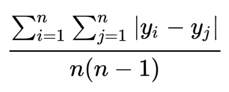
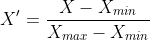
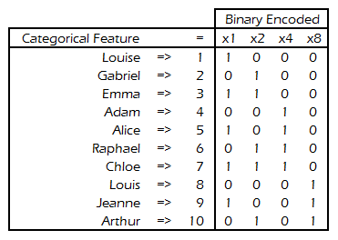

General
Misc
- Tree-based Models
- From Uber, “Tree-based models are performing piecewise linear functional approximation, which is not good at capturing complex, non-linear interaction effects.”
- With regression models, you have to be careful about encoding categoricals as ordinal (i.e. integers) which means one-hot encoding is better.
- For example, the raw numerical encoding (0-24) of the “hour” feature prevents the linear model from recognizing that an increase of hour in the morning from 6 to 8 should have a strong positive impact on the number of bike rentals while a increase of similar magnitude in the evening from 18 to 20 should have a strong negative impact on the predicted number of bike rentals.
- Models with large numbers (100s) of features increases the opportunity for feature drift
- Zero-Inflated Predictors/Features
- For ML, transformations probably not necessary
- For regression
- log(x + 0.05)
- larger effect on skew than sqrt
- arcsinh(x) (see Continuous >> Transformations >> Logging)
- approximates a log but handles 0s
- sqrt maybe Yeo-Johnson (?)
- log(x + 0.05)
- >60% of values = 0, consider binning or binary
Continuous
Binning
- Benefits
- Reduces Noise
- Continuous variables tend to store information with minute fluctuations that provide no added value for the machine learning task of interest
- Makes the feature more intuitive
- Is there an important threshold value?
- 1 value –> split into a binary
- multiple values –> multinomial
- Is there an important threshold value?
- Minimizes outlier influence
- Reduces Noise
- Bin and Embed
- Steps
- Find bin ranges
- If sufficient data, calculate quantiles of the numeric vector to find the bin ranges
sklearn.preprocessing.KBinsDiscretizerhas a few different methods- Use some other method to find the number/ranges of bins (see R packages)
- Use the indices of the bins (i.e. leftmost bin is 1, 2nd leftmost bin is 2) to discretize each value of the numeric
- Might need to be one-hot coded
- Create an embedding of the discretized vector and use the embedding as features.
- Find bin ranges
- Steps
- Dichotomizing is bad (post, list of papers)
- Typical arguments for splitting (even when there’s no underlying reason to do so) include: simplifies the statistical analysis and leads to easy interpretation and presentation of results
- Example: splitting at the median—leads to a comparison of groups of individuals with high or low values of the measurement, leading in the simplest case to a t test or χ2 test and an estimate of the difference between the groups (with its confidence interval) on another variable.
- Using multiple categories (to create an “ordinal” variable) is generally preferable , and using four or five groups the loss of information can be quite small
- Issues:
- Information is lost, so the statistical power to detect a relation between the variable and patient outcome is reduced.
- Dichotomising a variable at the median reduces power by the same amount as would discarding a third of the data
- May increase the risk of a positive result being a false positive
- May seriously underestimate the extent of variation in outcome between groups, such as the risk of some event, and considerable variability may be subsumed within each group.
- Individuals close to but on opposite sides of the cutpoint are characterised as being very different rather than very similar.
- Conceals any non-linearity in the relation between the variable and outcome
- Using a stat like median for a cutpoint means studies will have different cutpoints, therefore results cannot easily be compared, seriously hampering meta-analysis of observational studies
- An “optimal” cutpoint (usually that giving the minimum P value) runs a high risk of a spuriously significant result. Effect will be overestimated and the CI too narrow
- Adjusting for the effect of a confounding variable, dichotomisation will run the risk that a substantial part of the confounding remains
- Information is lost, so the statistical power to detect a relation between the variable and patient outcome is reduced.
- Typical arguments for splitting (even when there’s no underlying reason to do so) include: simplifies the statistical analysis and leads to easy interpretation and presentation of results
- Harrell
- Think most of these issues are related to inference models like types of logistic regression
- A better approach that maximizes power and that only assumes a smooth relationship is to use a restricted cubic spline (regression spline; piecewise cubic polynomial) function for predictors that are not known to predict linearly. Use of flexible parametric approaches such as this allows standard inference techniques (P -values, confidence limits) to be used (See Feature Engineering, Splines)
- Issues with binning continuous variables
- If cutpoints are chosen by trial and error in a way that utilizes the response, even informally, ordinary P -values will be too small and confidence intervals will not have the claimed coverage probabilities.
- The correct Monte-Carlo simulations must take into account both multiple tests and uncertainty in the choice of cutpoints.
- Using the “minimum p-value approach” often results in multiple cutpoints so ¯\_(ツ)_/¯ plus multiple testing p-value adjustments need to be used.
- This approach involves testing multiple cutpoints and choosing one that minimizes the p-value below a threshold.
- Optimal cutpoints often change from sample to sample
- The optimal cutpoint for a predictor would necessarily be a function of the continuous values of all the other predictors
- You’re losing variation (information) which causes a loss of power and precision
- Assumes that the relationship between the predictor and the response is flat within each interval
- this assumption is far less reasonable than a linearity assumption in most cases
- Percentiles
- Usually estimated from the data at hand, are estimated with sampling error, and do not relate to percentiles of the same variable in a population
- Value of binned variable potentially takes on a different relationship with the outcome
- e.g. Body Mass Index has a smooth relationship with every outcome studied, and relates to outcome according to anatomy and physiology. Binning may change that relationship to being how many subjects have a similar BMI.
- Many bins usually required to make it worth it. Therefore, many dummy variables will end up being created resulting in a loss of power and precision. (i.e. more bins = more variables = more dof used)
- Poor predictive performance with Cox regression models
- If cutpoints are chosen by trial and error in a way that utilizes the response, even informally, ordinary P -values will be too small and confidence intervals will not have the claimed coverage probabilities.
- They might help with prediction using ML or DL models though
- “Instead of directly using marketplace health as a continuous feature, we decided to use a form of target-encoding by splitting up the metric into buckets and taking the average historical delivery duration within that bucket as the new feature. With this approach, we directly helped the model learn that very supply-constrained market conditions are correlated with very high delivery times — rather than relying on the model to learn those patterns from the relatively sparse data available.”
- Improving ETA Prediction Accuracy for Long Tail Events
- Helps to “represent features in a way that makes it easy for the model to learn sparse patterns.”
- This article was about modeling tail events, so maybe this is most useful for features that have an association with the tail values in the outcome variable
- XGBoost seems to like numerics much more than dummies
- Trees may prefer larger cardinalities. So if you do bin, you’d probably want quite a few bins
- Never really seen a binned age variable do well, so guessing more than 10 at least. Though maybe Age just wasn’t important enough.
- “Instead of directly using marketplace health as a continuous feature, we decided to use a form of target-encoding by splitting up the metric into buckets and taking the average historical delivery duration within that bucket as the new feature. With this approach, we directly helped the model learn that very supply-constrained market conditions are correlated with very high delivery times — rather than relying on the model to learn those patterns from the relatively sparse data available.”
- Examples
Binary
- Whether a user spent more than $50 or didn’t
- If user had activity on the weekend or not
Multinomial or Discrete
- Timestamp to morning/afternoon/ night,
- Order values into buckets of $10–20, $20–30, $30+
- Height, age
Example:
step_discretizedata(ames, package = "modeldata") recipe(~ Lot_Frontage + Lot_Area, data = ames) |> step_discretize(all_numeric_predictors(), num_breaks = 5) |> prep() |> bake(new_data = NULL) #> # A tibble: 2,930 × 2 #> Lot_Frontage Lot_Area #> <fct> <fct> #> 1 bin5 bin5 #> 2 bin4 bin4 #> 3 bin5 bin5 #> 4 bin5 bin4 #> 5 bin4 bin5 #> 6 bin4 bin3 #> 7 bin2 bin1 #> 8 bin2 bin1 #> 9 bin2 bin1 #> 10 bin2 bin2 #> # ℹ 2,920 more rows
Transformations
Misc
- Also see:
- Centering
- No matter how a variable is centered (e.g. around the mean, median, or other number), its linear regression coefficient will not change - only the intercept will change.
- Guide for choosing a scaling method for classification modeling
- Notes from The Mystery of Feature Scaling is Finally Solved (narrator: it wasn’t)
- Only used a SVM model for experimentation so who knows if this carries over to other classifiers
- tldr
- Got time and compute resources? –> Ensemble different standardization methods using averaging
- No time and limited compute resources –> standardization
- Models that are distribution independent or distance sensitive (e.g. SVM, kNN, ANNs) should use standardization
- Models that are distribution dependent (e.g. regularized linear regression, regularized logistic regression, or linear discriminant analysis) weren’t tested
- No evidence that data-centric rules (e.g. normal or non-normal distributed variables, outliers present)
- Feature scaling that is aligned with the data or model can be responsible for overfitting
- Ensembling by averaging (instead of using a model to ensemble) different standarization methods
- Experiment used robust scaler (see below) and z-score standardization
- When they added a 3rd method it created more biased results
- Requires predictions to be probabilities
- For ML models, this takes longer because an extra CV has to be run
- Experiment used robust scaler (see below) and z-score standardization
- Notes from The Mystery of Feature Scaling is Finally Solved (narrator: it wasn’t)
Standardization
- The standard method transforms feature to have mean = 0, and standard deviation = 1
- Not robust to outliers
- Feature will be skewed
- Not robust to outliers
- Using the median to center and the MAD to scale makes the transformation robust to outliers
- Scaling by 2 sd/MAD instead of 1 sd/MAD can be useful to obtain model coefficients of continuous parameters comparable to coefficients related to binary predictors, when applied to the predictors (not the outcome)
- Notes from
- Reasons to standardize
- Most ML/DL models require it
- Many elements used in the objective function of a learning algorithm (such as the RBF kernel of Support Vector Machines or the l1 and l2 regularizers of linear models) assume that all features are centered around zero and have variance in the same order. If a feature has a variance that is orders of magnitude larger than others, it might dominate the objective function and make the estimator unable to learn from other features correctly as expected.
- Most Clustering methods require it
- PCA can only be interpreted as the singular value decomposition of a data matrix when the columns have centered
- Interpreting the intercept as the mean of the outcome when all predictors are held at their means
- Predictors with large values (country populations) can have really small regression coefficients. Standardization makes the coefficients have a more managable scale.
- Some types of models are more numerically stable with the predictors have been standardized
- Easier to set priors in Bayesian modeling
- Centering fixes collinearity issues when creating powers and interaction terms
- Collinearity between the created terms and the main effects
- Most ML/DL models require it
- Other Reasons why you might want to:
- Creating a composite score
- When you’re trying to sum or average variables that are on different scales, perhaps to create a composite score of some kind. Without scaling, it may be the case that one variable has a larger impact on the sum due purely to its scale, which may be undesirable.
- Other Examples:
- Research into children’s behavioral disorders - researchers might get ratings from both parents & teachers, & then want to combine them into a single measure of maladjustment.
- Study on the activity level at a nursing home w/ self-ratings by residents & the number of signatures on sign-up sheets for activities
- To simplify calculations and notation.
- A sample covariance matrix of values that has been centered by their sample means is simply X′X (correlation matrix)
- If a univariate random variable, X, has been mean centered, then var(X)=E(X2) and the variance can be estimated from a sample by looking at the sample mean of the squares of the observed values.
- Creating a composite score
- Reasons NOT to standardize
- We don’t want to standardize when the value of 0 is meaningful.
step_best_normalizeRequires {bestNormalize} and has
bestNormalizefor use outside of {tidymodels}Chooses the best standardization method using repeated cross-validation to estimate the Pearson’s P statistic divided by its degrees of freedom (from {nortest}) which indicates closness to the Gaussian distribution.
Package features the method, Ordered Quantile normalization (
orderNorm, or ORQ). ORQ transforms the data based off of a rank mapping to the normal distribution.Also includes: Lambert W\(\times\)F, Box Cox, Yeo-Johnson, arcsinh, exponential, log, square root, and has a method to add your own.
Example
library(bestNormalize) data(ames, package = "modeldata") recipe(Sale_Price ~ Lot_Frontage + Lot_Area, data = ames) |> step_best_normalize(all_numeric_predictors()) |> prep() |> bake(new_data = NULL) #> # A tibble: 2,930 × 3 #> Lot_Frontage Lot_Area Sale_Price #> <dbl> <dbl> <int> #> 1 2.48 2.29 215000 #> 2 0.789 0.689 105000 #> 3 0.883 1.28 172000 #> 4 1.33 0.574 244000 #> 5 0.468 1.19 189900 #> 6 0.656 0.201 195500 #> 7 -0.702 -1.27 213500 #> 8 -0.669 -1.24 191500 #> 9 -0.735 -1.19 236500 #> 10 -0.170 -0.654 189000 #> # ℹ 2,920 more rows
scale(var or matrix)- Default args: center = T, scale = T
- Standardizes each column of a matrix separately
- FYI
scale(var) == scale(scale(var))
- {datawizard::standardize} - Can center by median and scale by MAD (robust), can scale by 2sd (Gelman)
- {{sklearn::RobustScaler}}
- Standardize by median and IQR instead of mean and sd
- (value − median) / IQR
- The resulting variable has a zero mean and median and a standard deviation of 1, although not skewed by outliers and the outliers are still present with the same relative relationships to other values.
step_normalizehas means, sd args, so it might be able to do this
- Standardize by median and IQR instead of mean and sd
- Harrell recommends substituting the gini mean difference for the standard deviation
- Gini’s mean difference - the mean absolute difference between any two distinct elements of a vector.

- Gini’s mean difference - the mean absolute difference between any two distinct elements of a vector.
{kind=link}
Rescaling/Normalization
Misc
- If the values of the feature get rescaled between 0 and 1, i.e. [0,1], then it’s called normalization
- Except in min/max, all values of the scaling variable should be > 0 since you can’t divide by 0
- {datawizard::rescale} - Scales variable to a specified range
Min/Max
Range: [0, 1]
Make sure the min max value are NOT outliers. If they are outliers, then the range of your data will be more constricted that it needs to be.
- e.g. if values are in between 100 and 500 with an exceptional value of 25000, then 25000 is scaled as 1 and all the other values become very close to the lower bound of zero
Example: Age is the predictor and Happiness is the outcome. Imagine a very strong relationship between age and happiness, such that happiness is at its maximum at age 18 and its minimum at age 65. It’ll be easier if we rescale age so that the range from 18 to 65 is one unit. Now this new variable A ranges from 0 to 1, where 0 is age 18 and 1 is age 65. (from Statistical Rethinking section 6.3.1 pg 182)
d2 <- d[ d$age>17 , ] # only adults d2$A <- ( d2$age - 18 ) / ( 65 - 18 )
Range: [a, b]
Also see notebook for code to transform more than 1 variable at a time.
By max
scaled_var = var/max(var)- Example: From Statistical Rethinking, pg 246
- “… zero ruggedness is meaningful. So instead terrain ruggedness is divided by the maximum value observed. This means it ends up scaled from totally flat (zero) to the maximum in the sample at 1 (Lesotho, a very rugged and beautiful place).”
- Example: From Statistical Rethinking, pg 258
- “I’ve scaled blooms by its maximum observed value, for three reasons. First, the large values on the raw scale will make optimization difficult. Second, it will be easier to assign a reasonable prior this way. Third, we don’t want to standardize blooms, because zero is a meaningful boundary we want to preserve.”
- blooms is bloom size. So there can’t be a negative but zero makes sense.
- blooms is 2 magnitudes larger than both its predictors.
- “I’ve scaled blooms by its maximum observed value, for three reasons. First, the large values on the raw scale will make optimization difficult. Second, it will be easier to assign a reasonable prior this way. Third, we don’t want to standardize blooms, because zero is a meaningful boundary we want to preserve.”
- Example: From Statistical Rethinking, pg 246
By mean
scaled_var = var/mean(var)- Example: From Statistical Rethinking, pg 246
- “log GDP is divided by the average value. So it is rescaled as a proportion of the international average. 1 means average, 0.8 means 80% of the average, and 1.1 means 10% more than average.”
- Example: From Statistical Rethinking, pg 246
Logging
Useful for skewed variables
If you have zeros, then its common to add 1 to the predictor values
- To backtransform:
exp(logged_predictor) - 1 - arcsinh(x): approximates a log (at large values of x) but handles 0s:
- Backtransform:
log(x + sqrt(1+x^2))
- Backtransform:
- * Don’t use these for outcome variables (See Regression, Other >> Zero-Inflated/Truncated >> Continuous for methods, Thread for discussion and link to a paper on the alternatives)
- The scale of the outcome matters. The thread links to a discussion of a paper on log transforms.
- Proposals in the paper are in Section 4.1. One of the recommendations is log(E[Y(0)] + Y) where (I think) E[Y(0)] is the average value of Y when Treatment = 0 but I’m not sure. Need to read the paper.
- To backtransform:
Remember to back-transform predictions if you transformed the target variable
# log 10 transformed target variable preds_intervals <- predict( workflows::pull_workflow_fit(lm_wf), workflows::pull_workflow_prepped_recipe(lm_wf) %>% bake(ames_holdout), type = "pred_int", level = 0.90 ) %>% mutate(across(contains(".pred"), ~10^.x))Combos
- Log + scale by mean
- Example From Statistical Rethinking Ch8 pg 246
- “Raw magnitudes of GDP aren’t meaningful to humans. Since wealth generates wealth, it tends to be exponentially related to anything that increases it (earlier in chapter). This is like saying that the absolute distances in wealth grow increasingly large, as nations become wealthier. So when we work with logarithms instead, we can work on a more evenly spaced scale of magnitudes”
- “Log GDP is divided by the average value. So it is rescaled as a proportion of the international average. 1 means average, 0.8 means 80% of the average, and 1.1 means 10% more than average.”
- Example From Statistical Rethinking Ch8 pg 246
- Log + scale by mean
Discrete
- Quantitative variables that are countable with no in-between the values. (e.g. integer value variables)
- e.g. Age, Height (depending on your scale), Year of Birth, Counts of things
- Many variables can be either discrete or continuous depending on whether they are “exact” or have been rounded (i.e. their scale).
- Time since event, distance from location
- A zip code would not be a discrete variable since it is not quantitative (i.e. don’t represent amounts of anything). The values just represent geographical locations and could just as easily be names instead of numbers. There is no inherent meaning to arithmetic operations performed on them (e.g. zip_code1 - 5 has no obvious meaning)
- e.g. Age, Height (depending on your scale), Year of Birth, Counts of things
- Binning
- See Binning
- Range to Average
- So numerical range variables like Age can have greater predictive power in ML/DL algorithms by just using the average value of the range
- e.g. Age == 21 to 30 –> (21+30)/2 = 25.5
- Rates/Ratios
- See Domain Specific
- Min/Max Rescaling
Categoricals
Misc
- See Feature Engineering, Embeddings >> Engineering
- One-Hot Encode Issues:
- With high cardinality, the feature space explodes –>
- Less power
- Likely to encounter memory problems
- Using a sparse matrix is memory efficient which might make the one-hot encode feasible
- Sparse data sets don’t work well with highly efficient tree-based algorithms like Random Forest or Gradient Boosting.
- Model can’t determine similarity between categories (embedding does)
- Every kind of encoding and embedding outperforms it by a lot, especially in tree models
- With high cardinality, the feature space explodes –>
Combine/Lump/Collapse
- Collapse categories with similar characteristics to reduce dimensionality
- states to regions (midwest, northwest, etc.)
- Lump
Cat vars with levels with too few counts –> lump together into an “Other” category
step_other(cat_var, threshold = 0.01) # see- For details see Model Building, tidymodels >> Recipe
- Levels with too few data will have large uncertainties about the effect and the bloated std.devs can cause some models to throw errors
- Combine
- The feature reduction can help when data size is a concern
- Think this is equivalent to a cat-cat interaction. ML models usually algorithmically create interactions but I guess this way you get the interaction but with fewer features.
- Also might be useful to use the same considerations that you use to choose interactions to choose which cat variables to combine.
- Steps
- Combine var1 and var2 (e.g. “dog”, “minnesota”) to create a new feature called var3 (“dog_minnesota”).
- Remove individual features (var1 and var2) from the dataset.
- encode (one-hot, dummy, etc.) var 3
- The feature reduction can help when data size is a concern
Encode/Hashing
Cat vars with high numbers of levels need encoded
Can’t dummy var because it creates too many additional variables –> reduces power
Numeric:
as.numeric(as.factor(char_var))Target Encoding
-
- tl;dr; I don’t see a method that stands out as theoretically better or worse than the others. The rnorm method would probably produce the most variance within the predictor.
target_encoding_labtakes a df and encodes all categoricals using all or some of the methods- Rank (
target_encoding_rank): Returns the rank of the group as a integer, starting with 1 as the rank of the group with the lower mean of the response variable- white_noise argument might be able to used.
- Mean (
target_encoding_mean): Replaces each value of the categorical variable with the mean of the response across the category the given value belongs to.- The argument, white_noise, limits potential overfitting. Must be a value betwee 0 and 1. The value added depends on the magnitude of the response. If response is within 0 and 1, a white_noise of 0.25 will add to every value of the encoded variable a random number selected from a normal distribution between -0.25 and 0.25
- rnorm (
target_encoding_rnorm): Computes the mean and standard deviation of the response for each group of the categorical variable, and uses rnorm() to generate random values from a normal distribution with these parameters.- The argument rnorm_sd_multiplier is used as a multiplier of the standard deviation to control the range of values produced by
rnorm()for each group of the categorical predictor. Values smaller than 1 reduce the spread in the results, while values larger than 1 have the opposite effect.
- The argument rnorm_sd_multiplier is used as a multiplier of the standard deviation to control the range of values produced by
- LOO (
target_encoding_loo): Replaces each categorical value with the mean of the response variable across the other cases within the same group.- The argument, white_noise, limits potential overfitting.
-
pip install category_encoders import category_encoders as ce target_encoder = ce.TargetEncoder(cols=['cat_col_1', 'cat_col_2']) target_encoder.fit(X, y) X_transformed = target_encoder.transform(X_pre_encoded)
-
Catboost Encoder
pip install category_encoders import category_encoders as ce target_encoder = ce.CatBoostEncoder(cols=['cat_col_1', 'cat_col_2']) target_encoder.fit(X, y) X_transformed = target_encoder.transform(X_pre_encoded)Binary Encoding
- Benchmarks for decision trees:
- Numeric best (< 1000 categories)
- Binary best (> 1000 categories)
- Store N cardinalities using ceil(log(N+1)/log(2)) features

- Benchmarks for decision trees:
Hashing
- I’m not sure about this method. I’ve seen examples where hashes look very different when 1 small thing changes — but maybe it was the algorithm. Also seems like it would be poor security if things that looked similar had similar hashes.
- See Privacy for hashing packages
- Beyond security and fast look-ups, hashing is used for similarity search.
- e.g. Different pictures of the same thing should have similar hashes
- So, if these hashes are being binned, you’d want something a hashing algorithm thinks is similar to actually be similar in order for this to be most effective.
- zip codes, postal codes, lat + long would be good
- Not countries or counties since I’d think the hashing similarity would be related to how similar they are alphabetically or maybe phonetically
- Maybe something like latin species names since those have similar roots, etc. would work. (e.g. dogs are canis-whatever)
- Can’t be reversed to the original values
- Although since you have the original, it seems like you could see which cat levels are in a particular hash and maybe glean some latent variable
- Creates dummies for each cat but fewer of them.
- It is likely that multiple levels of the column will map to the same hashed columns (even with small data sets). Similarly, it is likely that some columns will have all zeros.
- A zero-variance filter (via
recipes::step_zv) is recommended for any recipe that uses hashed columns
- A zero-variance filter (via
- It is likely that multiple levels of the column will map to the same hashed columns (even with small data sets). Similarly, it is likely that some columns will have all zeros.
textrecipes::step_dummy_hash- Dimension Reduction. Create dummy variables, but instead of giving each level its own column, you run the level through a hashing function (MurmurHash3) to determine the column.num_terms: Tuning parameter tha controls the number of indices that the hashing function will map to. Since the hashing function can map two different tokens to the same index, will a higher value of num_terms result in a lower chance of collision.
Example
data(ames, package = "modeldata") recipe(Sale_Price ~ Neighborhood, data = ames) |> step_dummy_hash(Neighborhood, num_terms = 4) |> # Low for example prep() |> bake(new_data = NULL) #> # A tibble: 2,930 × 5 #> Sale_Price dummyhash_Neighborhood_1 dummyhash_Neighborhood_2 #> <int> <int> <int> #> 1 215000 0 -1 #> 2 105000 0 -1 #> 3 172000 0 -1 #> 4 244000 0 -1 #> 5 189900 0 0 #> 6 195500 0 0 #> 7 213500 0 0 #> 8 191500 0 0 #> 9 236500 0 0 #> 10 189000 0 0 #> # ℹ 2,920 more rows #> # ℹ 2 more variables: dummyhash_Neighborhood_3 <int>, #> # dummyhash_Neighborhood_4 <int>
Likelihood Encodings
- Estimate the effect of each of the factor levels on the outcome and these estimates are used as the new encoding. The estimates are estimated by a generalized linear model. This step can be executed without pooling (via glm) or with partial pooling (stan_glm or lmer). Currently implemented for numeric and two-class outcomes.
- {embed}
step_lencode_glm,step_lencode_bayes, andstep_lencode_mixed
Ordinal
Misc
If there are NAs or Unknowns, etc.,
- After coercing into a numeric/integer, you can convert Unknowns to NA and then impute the variable
All these encodings will produce the same results for a tree model, since tree-based models rely on variable ranks rather than exact values.
0 = “0 Children” 1 = “1 Child” 2 = “2 Children” 3 = “3 Children” 4 = “4 or more Children” 1 = “0 Children” 2 = “1 Child” 3 = “2 Children” 4 = “3 Children” 5 = “4 or more Children” -100 = “0 Children” -85 = “1 Child” 0 = “2 Children” 10 = “3 Children” 44 = “4 or more Children”
Via {tidymodels}
step_mutate(ordinal_factor_var = as_integer(ordinal_factor_var)) # think this uses as_numeric step_ordinalscore(ordinal_factor_var)Polynomial Contrasts
- See the section Kuhn’s book
Rainbow Method (article)
- MIsc
- Creates an artifical ordinal variable from a nominal variable (i.e. ordering colors according the rainbow, roy.g.biv)
- At worst, it maintains the signal of a one-hot encode, but with tree models, it results in less splits and therefore a simpler, more efficient, and less overfit model.
- Test psuedo ordinal method by constructing a simple bayesian model with response ~ 0 + ordinal. Then, you extract the posterior for each constructed ordinal level. Pass these posteriors through a constraint that labels draws for that level that are less (or not) than the draws of the previous level. Lastly calculate the proportion of those that were less than in order to get a probability that the predictor is ordered (article >> “The Model” section)
Code
grid <- data.frame( Layer = c("B", "C", "E", "G", "I"), error = 0 ) grid_with_mu <- tidybayes::add_linpred_rvars(grid, simple_mod, value = ".mu") is_stratified <- with(grid_with_mu, { .mu[Layer == "B"] > .mu[Layer == "C"] & .mu[Layer == "C"] > .mu[Layer == "E"] & .mu[Layer == "E"] > .mu[Layer == "G"] & .mu[Layer == "G"] > .mu[Layer == "I"] }) Pr(is_stratified) #> [1] 0.78725“Layer” is the ordinal variable being tested
add_linpred_rvarsextracts the mean response posteriors for each level of the variableResults strongly suggest that the levels of the variable (“Layer”) are ordered, with a 0.79 posterior probability.
- Methods:
- Domain Knowledge
- Variable Attribute (see examples)
- Others - Best to compute these on a hold out set, so as not cause data leakage
- Association with the target variable where the value of association is used to rank the categories
- Proportion of the event for a binary target variable where the value of the proportion is used to rank the categories
- If it’s possible, use domain knowledge according the project’s context to help choose the ranking of the categories.
- There are always multiple ways to rank the categories, so it may be worthwhile to try multiple versions of the artificial ordinal variable
- Not recommended to use more than log₂(K) versions, so as to not surpass the number of variables creating using One-hot (where k is the number of categories)
- Example: Vehicle Type
- Categories
- C: “Compact Car”
- F: “Full-size Car”
- L: “Luxury Car”
- M: “Mid-Size Car”
- P: “Pickup Truck”
- S: “Sports Car”
- U: “SUV”
- V: “Van”
- Potential attributes to order by: vehicle size, capacity, price category, average speed, fuel economy, costs of ownership, motor features, etc.
- Categories
- Example: Occupation
- Categories
- 1: “Professional/Technical”
- 2: “Administration/Managerial”
- 3: “Sales/Service”
- 4: “Clerical/White Collar”
- 5: “Craftsman/Blue Collar”
- 6: “Student”
- 7: “Homemaker”
- 8: “Retired”
- 9: “Farmer”
- A: “Military”
- B: “Religious”
- C: “Self Employed”
- D: “Other”
- Potential attributes to order by: average annual salary, by their prevalence in the geographic area of interest, or variables in a Census dataset or some other data source
- Categories
- MIsc
Weight of Evidence
embed::step_woe
Interactions
- Manually
- Numeric ⨯ Cat
- Dummy the cat, then multiply the numeric times each of the dummies.
- Numeric ⨯ Cat
Date
- Duration
- Days since last purchase per customer
- Example:
(max(invoice_date) - max_date_overall) / lubridate::ddays(1)- Think ddays converts this value to a numeric
- Example:
- Customer Tenure
- Example:
(min(invoice_date) - max_date_overall) / lubridate::ddays(1)
- Example:
- Days since last purchase per customer
Domain Specific
- Rates/Ratios
- Purchase per Customer
- Total Spent
- Example:
sum(total_per_invoice, na.rm = TRUE)
- Example:
- Average Spent
- Example:
mean(total_per_invoice, na.rm = TRUE)
- Example:
- Total Spent
- Let the effect of Cost vary by the person’s income
mutate(cost_income = cost_of_product/persons_income)- Intuition being that the more money you have the less effect cost will have on whether purchase something.
- Dividing the feature by income is equivalent to dividing the \(\beta\) by income.
- Purchase per Customer
- Pre-Treatment Baseline
- Example: From Modeling Treatment Effects and Nonlinearities in A/B Tests with GAMS
- outcome = log(profit), treatment = exposure to internation markets, group = store
- Baseline variable is log(profit) before experiment is conducted
- Should center this variable
- Example: From Modeling Treatment Effects and Nonlinearities in A/B Tests with GAMS